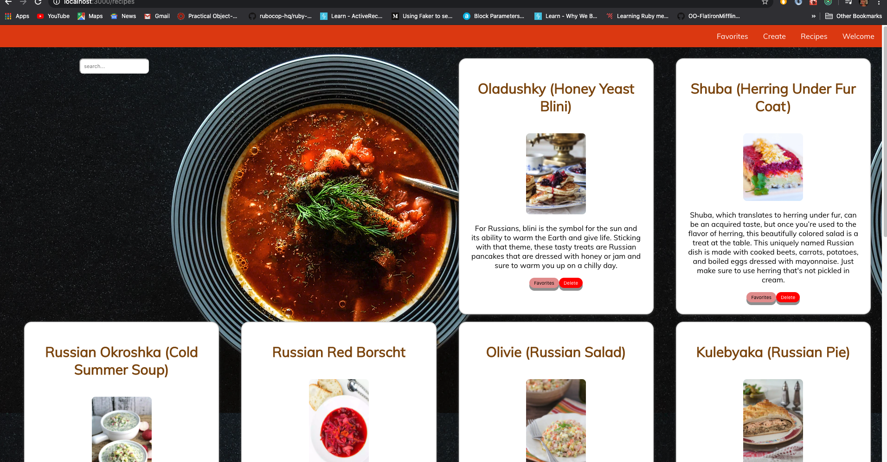
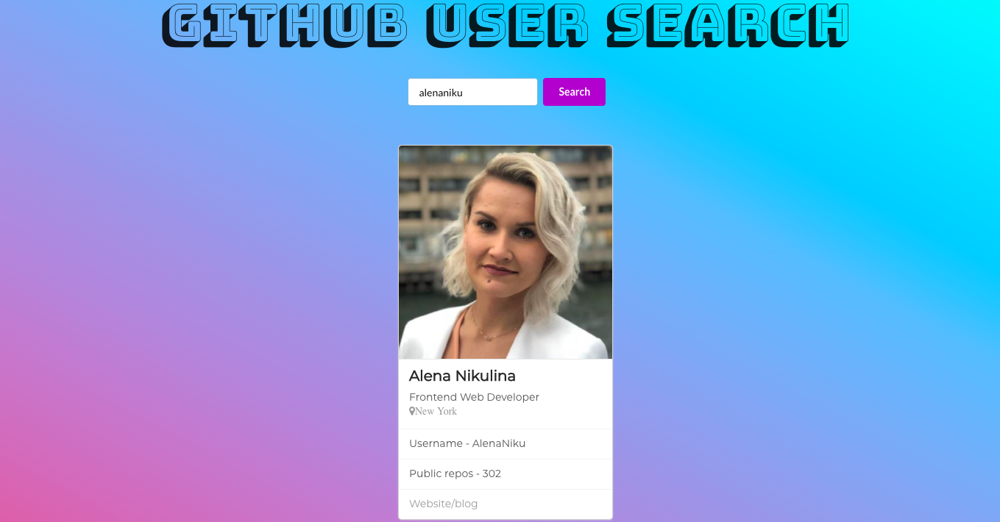
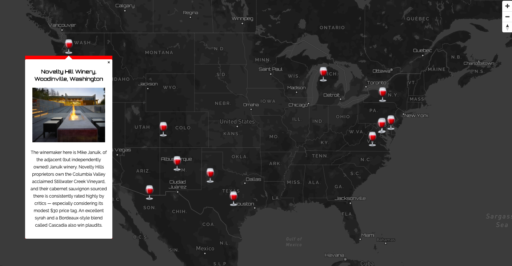

My Projects
Taste of Russia
 Video DemoCapstone project for Flatiron Coding Bootcamp-Russian recipe app. Search, create your own, add to favorites or delete recipes
- Developed Rails API backend for data fetching, persistence and serving JSON resources to the client-side framework - React
- Used React as a base in the development of the single-page application as well as for building interactive UI
- Implemented Redux application data-flow architecture for managing application state, maintainability, organization and better user experience
- Utilized react-router in conjunction with RESTful routing convention for dynamic route matching
Github Finder
 Live DemoReact app for researching information about Github users developed for Mintbean's solo hackathon in under 5 hours. Deployed to Github Pages
- Used React as a base in the development of single-page application as well as for building interactive UI
- Styled components with Semantic-UI-React framework which additionally allowed for complete mobile responsive experience
- Fetching and integrating high-level information and user data from the RESTful Github API
- Implemented React Hooks for handling state changes and mimicking lifecycle features for functional components
Vino Map
 Live DemoInteractive map of select wineries in the U.S. First ever solo hackathon, 3rd place winner, hosted by Mintbean. Created in under 4 hours, deployed to Github pages
- Utilized Mapbox - JavaScript library for creating interactive, customizable vector maps on the web
- Designed a fully customized interactive map with my own fonts, colors and textures with Mapbox Studio through a curated set of components for color and typography
- Developed custom geoJSON for data visualization and dynamic rendering of geospatial data by the map
- Implemented custom markers and popup window components with information about each winery